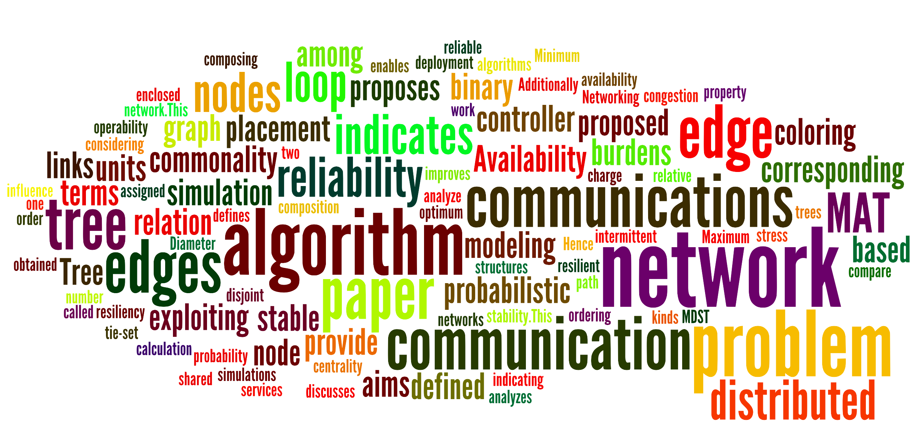

Summary
Genya is a Ph.D. student in the Erik Jonsson School of Engineering & Computer Science at the University of Texas at Dallas. My research lies in the area of optimization problems aiming at communications network design.
The following is the list of my active research projects.
- distributed network flow algorithm balancing loads on links
- reliable tree composition
- controller placement problem in Software Defined Networking (SDN)
Inspired by the research philosophy of Emeritus Prof. Hitoshi Watanabe who is my off-campus advisor and a recipient of the IEEE Kirchhoff Award, I am trying to develop theoretical researches that are closely related to engineering aspects based on graph theory and combinatorial optimizations.

My wordle from the abstracts of conference papers (May, 2016)